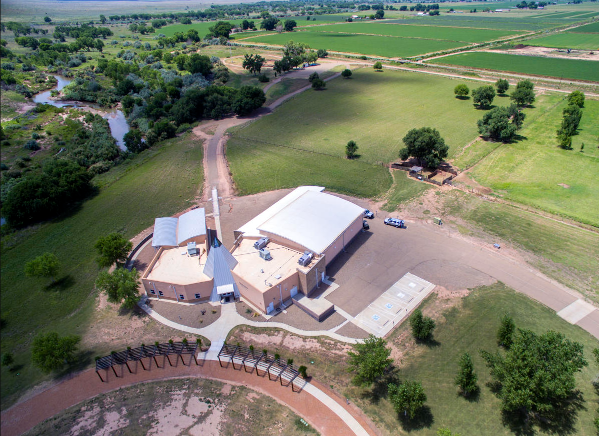
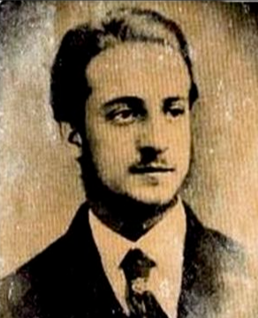
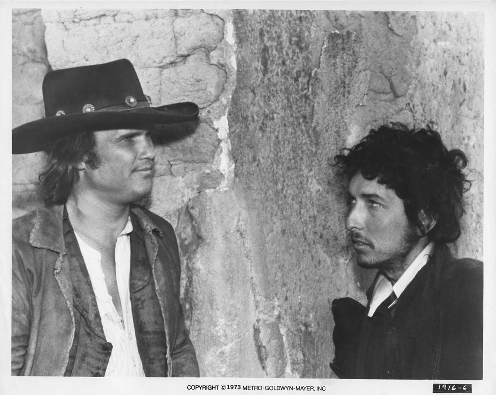

Billy the Kid’s first crime was the theft of a Chinese laundry. He was thrown in jail by the sheriff, who was just trying to teach him a lesson; however, Billy the Kid escaped his cell through the chimney flue, where he fled to southern Arizona, where he was known as “the Kid.” During his time there, he got into much more trouble by stealing horses from the U.S. Army; however, he had bigger issues with a local blacksmith. The Kid had decided enough was enough and shot Cahill. He had left before seeing Cahill pass away and fled to Lincoln County. After getting to Lincoln County, he stole a pair of Tunstall’s horses and ended up in jail. Instead of pressing charges, Tunstall offered him a job on his ranch, as he was handy with a gun and those types of men were in high supply.
Tunstall was later killed by a “tool of the House,” reports AmericanHeritage.com, which caused the start of the Lincoln County War. Tunstall’s men, including Billy, created the Regulators to hunt down those who killed Tunstall. The Regulators ambushed Brady and Deputy Hindman as they walked down a street. The lawmen collapsed dead and riddled with bullets. Months later, the Lincoln County War ended with a showdown. House gunmen and soldiers from Fort Stanton surrounded McSween, Billy, and others in the Regulator group. McSween was shot fleeing and was the only one who was caught. Billy was free; however, with a murder charge, it was momentary. He talked to Wallace, the governor, and they struck a deal. Billy would get an out as long as he would testify. Wallace later claimed the pardon came with another stipulation: for Billy to lead a different life. Billy testified for the grand jury; however, after weeks of waiting for the governor to make good on his half of the deal, nothing had happened, and Billy fled the town.
He made a place near the Pecos River, about 130 miles away from Lincoln County. At Fort Sumner, he made a lot of Spanish-speaking friends. Despite being a gambler and thief, those at Fort Sumner had a lot of positives to say about the Kid, or as they called him, Billito or el Cid. The cattlemen, on the other hand, were unimpressed by Billy and his constant cattle rustling. Garrett became sheriff shortly after, and after tracking down and capturing Billy and three of his gang, he was put in jail and announced guilty for the death of William Brady, being the only one charged for what happened in the Lincoln County War. The Kid was set to hang on May 13. While Garrett was out of town on April 18, he had surprised and killed two guards with their own guns. According to History.com, he ambushed a guard and shot him with the pistol the guard had, then got a double-barreled shotgun and shot a guard who had been crossing the street. He then cut his shackles with a pickaxe and fled on a stolen horse. After fleeing, they put a $500 bounty on the Kid's head. They had heard rumors saying Billy was back at the fort, as his sweetheart Paulina Maxwell was pregnant with the Kid’s child. On July 14, the sheriff slipped into town and went to Paulina’s ranch. The sheriff shot two bullets at Billy, with only one making its mark right above Billy’s heart. It knocked him to the floor and killed him almost instantly. The man, the myth, the legend.